30天鐵人賽介紹 AWS 雲端世界 - 26: AWS 提供的 Managed NoSQL DBMS - DynamoDB
What is DynamoDB
Amazon DynamoDB 是 NoSQL 資料庫服務， 是一種 Key-Value DB，沒有固定的schema，根據特性適合作水平擴展，將資料分布在不同服務器上，再根據hash去找尋資料。
DynamoDB 是取代之前的 SimpleDB；其設計概念為 Scalable (能應付極大量資料)、Available (HA Ready，跨 Region 當然還是要自己負責) 與 Fast （回應延遲穩定，數毫秒）。與 RDS 有著同樣無須擔心環境建置、設定和組態、輸送容量設計與規劃、複寫、甚至叢集擴展等問題都交由 AWS 來處理。讓開發者可以更專心在開發上。
相較於熟知的關聯式資料庫大概是這樣的概念：
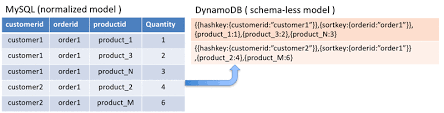
而與昨天介紹的 RDS 比較：
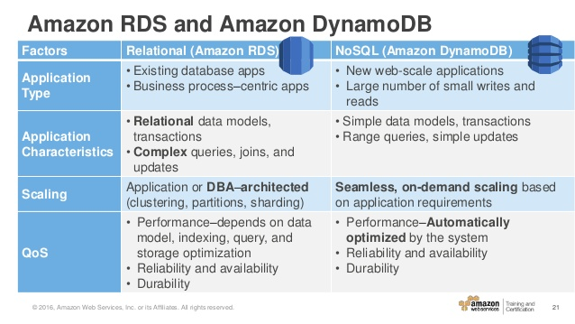
而主要在 DynamoDB 上有兩個 key:
- Partition Key
- Sort Key

使用上我們可以簡單的用Partition Key當主鍵(primary key)，或是建立複雜的組合主鍵(partition key + sort key)。設計與使用上的考量可參考Best Practices for Tables
整體的 DynamoDB 結構與命名空間主要為：
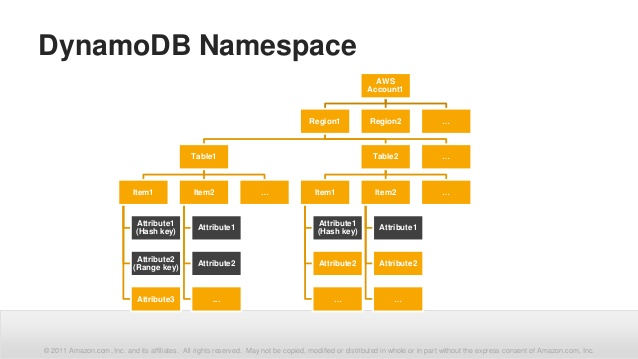
對於 DynamoDB 還想進一步了解的可以參考官方整理的介紹影片 入門 Amazon DynamoDB 簡介 (6:44)
Hands on Lab
我們就一樣透過實際 nodejs 實作整合 DynamoDB 服務並透過 aws-sdk 協助我們做開發。
Create RDS Instance
首先先登入 [AWS Console] 後在中間的輸入框查詢 DynamoDB ，或是透過左上角的 Services 點選到 Database 下的 Amazon DynamoDB 服務：
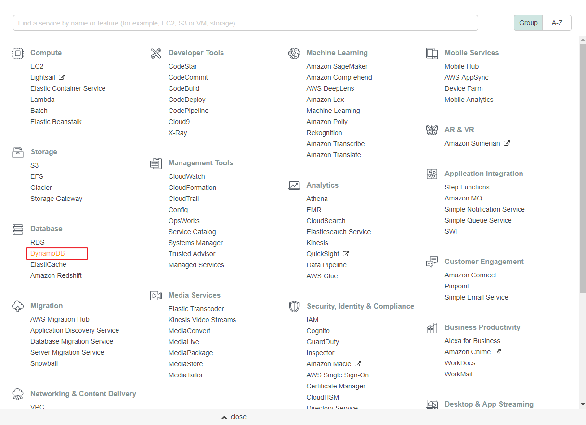
接著快速建立一個資料庫實體，這邊我們保留全部預設值：

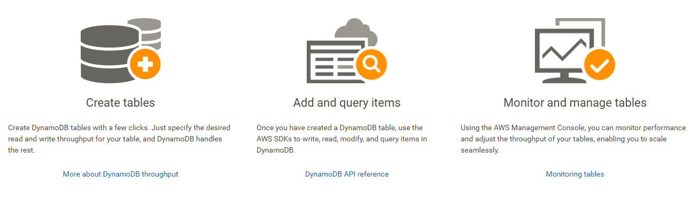
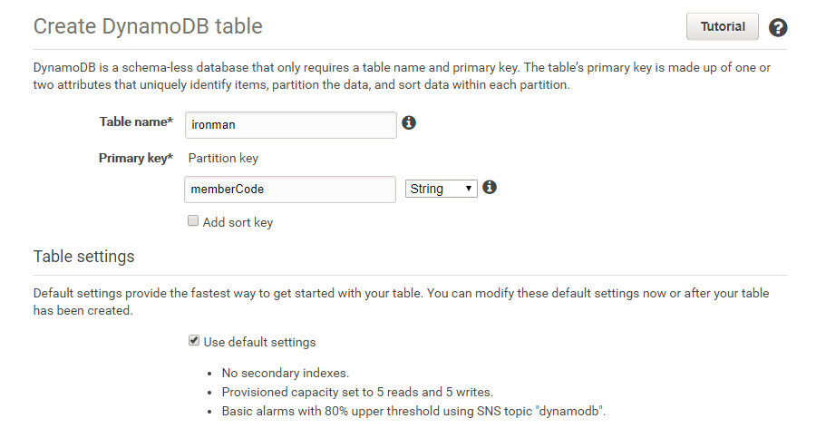
建立完後等待服務啟用即可使用：

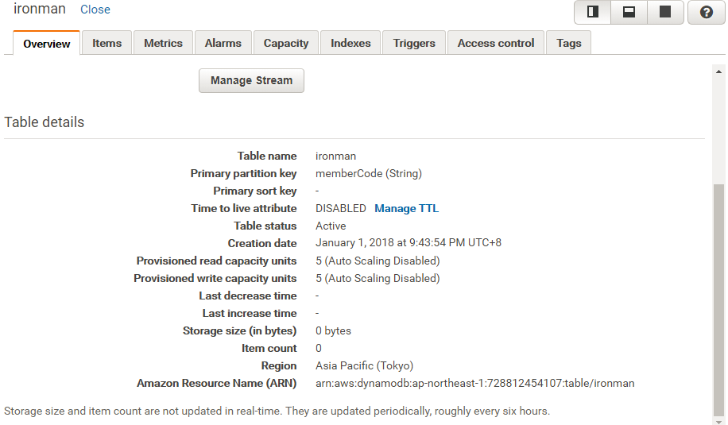
這邊我們可以透過介面手動新增、修改與刪除資料：
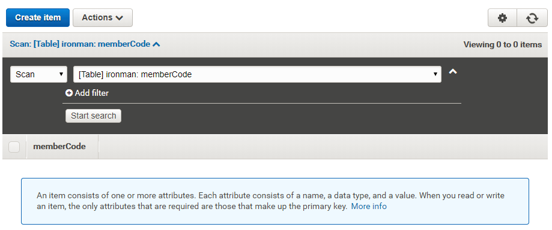
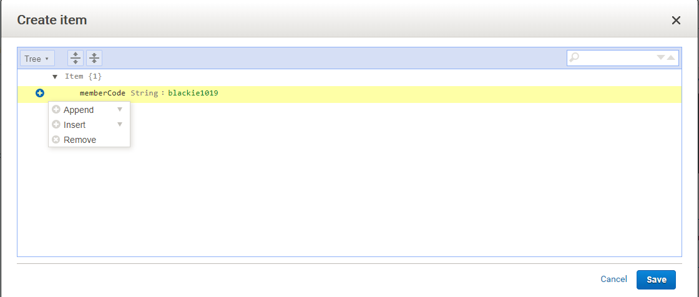
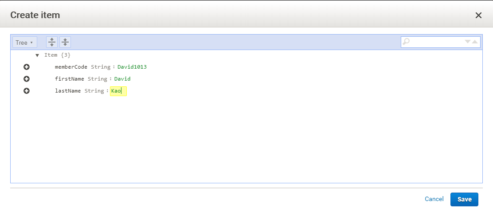

從上面這邊可以看到由於 DynamoDB 屬於 NoSQL 中的文件型資料庫，所以格式非常彈性。
Implement CRUD on node.js
接下來就用 node.js 來介接剛剛建立的資料實體，這邊需要透過 aws-sdk 這個套件作為 client 的 SDK:
npm install aws-sdk --save
npm install fs --save接著建立以下檔案建立資料表:
createTables.js
var AWS = require("aws-sdk");
AWS.config.update({
region: "ap-northeast-1"
});
var dynamodb = new AWS.DynamoDB();
var params = {
TableName : "Movies",
KeySchema: [
{ AttributeName: "year", KeyType: "HASH"}, //Partition key
{ AttributeName: "title", KeyType: "RANGE" } //Sort key
],
AttributeDefinitions: [
{ AttributeName: "year", AttributeType: "N" },
{ AttributeName: "title", AttributeType: "S" }
],
ProvisionedThroughput: {
ReadCapacityUnits: 10,
WriteCapacityUnits: 10
}
};
dynamodb.createTable(params, function(err, data) {
if (err) {
console.error("Unable to create table. Error JSON:", JSON.stringify(err, null, 2));
} else {
console.log("Created table. Table description JSON:", JSON.stringify(data, null, 2));
}
});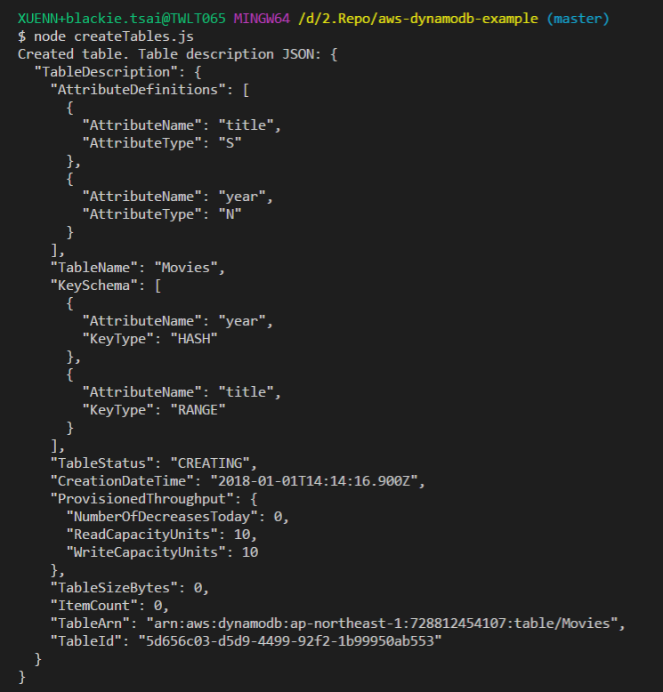
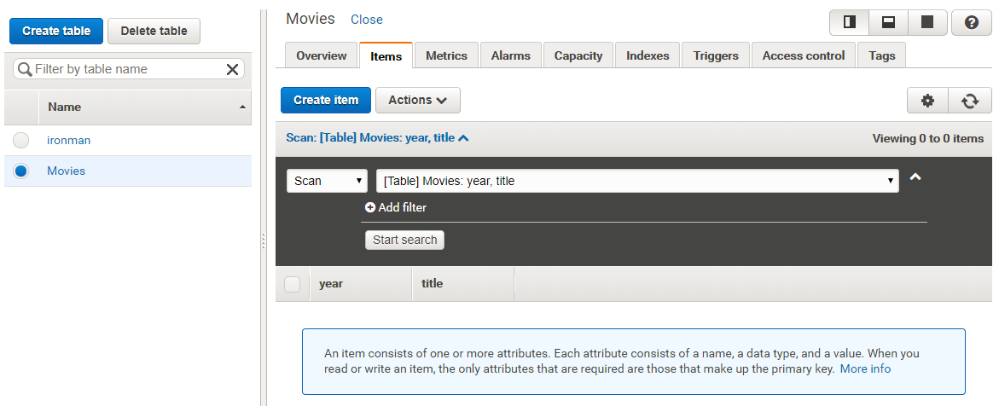
當上面執行完後我們就建立了第二個資料表，接下來匯入我們準備好的資料：

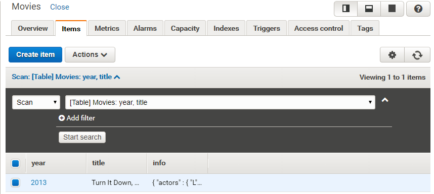

而原先我們建立的資料表也可以透過以下方式進行新增：
createItems.js
var AWS = require("aws-sdk");
AWS.config.update({
region: "ap-northeast-1"
});
var docClient = new AWS.DynamoDB.DocumentClient();
var table = "ironman";
var params = {
TableName:table,
Item:{
"memberCode": "John1010",
"firstName": "John",
"LastName": "Wu"
}
};
console.log("Adding a new item...");
docClient.put(params, function(err, data) {
if (err) {
console.error("Unable to add item. Error JSON:", JSON.stringify(err, null, 2));
} else {
console.log("Added item:", JSON.stringify(data, null, 2));
}
});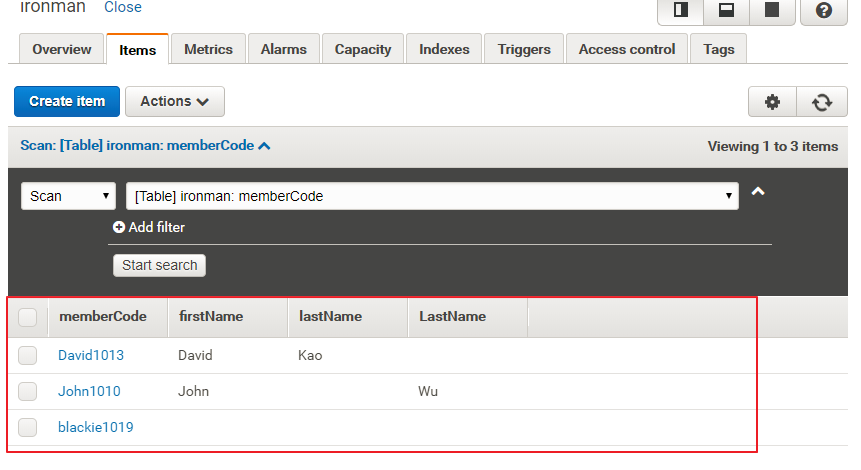
而我們需要讀取指定資料表則可透過下方：
readItems.js
var AWS = require("aws-sdk");
AWS.config.update({
region: "ap-northeast-1"
});
var docClient = new AWS.DynamoDB.DocumentClient();
var table = "ironman";
var params = {
TableName: table,
Key:{
"memberCode": "blackie1019"
}
};
docClient.get(params, function(err, data) {
if (err) {
console.error("Unable to read item. Error JSON:", JSON.stringify(err, null, 2));
} else {
console.log("GetItem succeeded:", JSON.stringify(data, null, 2));
}
});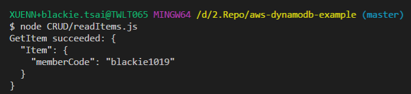
詳細的 CRUD 範例程式碼請至AWS DynamoDB sample code。